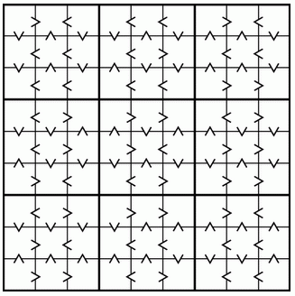
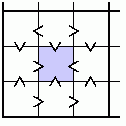

|
Problem F: Sudoku without numbers? |

On Killer Sudoku Online 1, there is a very interesting Sudoku variant - Greater Than Sudoku.
The right figure shows a Greater Than Sudoku puzzle. As you can see, there is absolutely no number to start with! There are only "greater-than signs" (>) between the cells. Beside usual Sudoku rules, there is an extra one: all greater-than signs must be satisfied, i.e. each of them must point from a larger number to a smaller one.
If there is no number given, then where shall we begin? Look at the partial puzzle shown in the left. Note that the centre cell (coloured in blue) is the only cell in its "big square" with all its greater-than signs pointing inwards. Therefore, it must contain the smallest number, i.e. 1 (one). Together with the usual Sudoku skills and some new tricks, we can solve the puzzle completely.
This sample puzzle is discussed in great detail in ReallyEvilCanine's blog 2.
Write a program that solves Greater Than Sudoku puzzles. In short, for each puzzle, we need to complete the grid so that each row, column and 3 × 3 box contains every digit from 1 to 9 (inclusive), and each greater-than sign points from a larger digit to a smaller one.
Input contains less than 10 test cases, each giving the greater-than signs in a Sudoku puzzle. Consecutive cases are separated by a blank line.
The sample input below corresponds to the sample puzzle shown in the above figure. All input cases will follow the format of this sample exactly.
For each test case, output the solution for the puzzle. Adjacent numbers in a row should be separated by a space, and consecutive sets of output should be separated by an empty line.
You can be sure that there is one and only one solution for each input puzzle.
> < < < > < v ^ v v ^ v ^ ^ v < < < > < < v ^ v ^ v v ^ ^ v < < < < > > < > > > < > v v ^ ^ v ^ ^ v v < > > < > > ^ v v v ^ v v ^ v > < < > > > < > > > > < v v v v ^ ^ ^ ^ ^ > < < < < < ^ ^ ^ ^ ^ v v v ^ > > < > < < > < < < > < v ^ v v ^ v ^ ^ v < < < > < < v ^ v ^ v v ^ ^ v < < < < > > < > > > < > v v ^ ^ v ^ ^ v v < > > < > > ^ v v v ^ v v ^ v > < < > > > < > > > > < v v v v ^ ^ ^ ^ ^ > < < < < < ^ ^ ^ ^ ^ v v v ^ > > < > < <
5 3 9 4 6 8 2 1 7 2 4 8 1 9 7 3 5 6 1 6 7 2 3 5 9 8 4 6 8 1 7 4 2 5 9 3 3 7 5 9 1 6 8 4 2 9 2 4 5 8 3 7 6 1 7 9 6 8 2 1 4 3 5 4 1 2 3 5 9 6 7 8 8 5 3 6 7 4 1 2 9 5 3 9 4 6 8 2 1 7 2 4 8 1 9 7 3 5 6 1 6 7 2 3 5 9 8 4 6 8 1 7 4 2 5 9 3 3 7 5 9 1 6 8 4 2 9 2 4 5 8 3 7 6 1 7 9 6 8 2 1 4 3 5 4 1 2 3 5 9 6 7 8 8 5 3 6 7 4 1 2 9